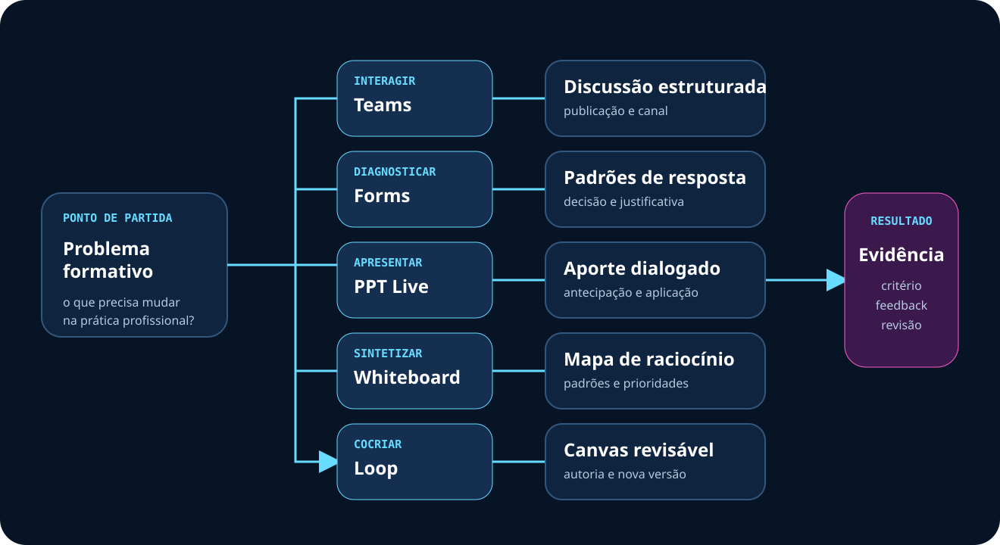

Ambiente do curso
Orientação, comunicação, encontros, grupos, publicações e continuidade.
Dia 2 • disponível
Forms, Whiteboard, Loop, Teams e SharePoint na elaboração de cursos, seguindo os capítulos e subtítulos do documento de referência.
Arquitetura pedagógica
O curso não é uma coleção de aplicativos. Cada ambiente cumpre uma função demonstrável na experiência.
Orientação, comunicação, encontros, grupos, publicações e continuidade.
Página inicial, trilha, acervo curado, produções e suporte.
Diagnóstico, recuperação ativa, feedback e acompanhamento.
Relações, hipóteses, critérios, alternativas e decisões.
Coautoria, registro do raciocínio, feedback e revisão.
Responsável, prazo, condições, evidência e novo ciclo de melhoria.

Sequência integrada
As ferramentas podem variar. A cadeia pedagógica permanece.
Estrutura do documento
Passos, modelos, critérios e cuidados foram mantidos na ordem do guia.
Premissa e cadeia FOFO.
Funções e fluxo das ferramentas.
Definição, finalidade, configuração, modelo e cuidados.
Usos, perguntas, critérios e cuidados.
Visualização, atividade, critérios e cuidados.
Elementos, página-modelo, critérios e cuidados.
Arquitetura, página-modelo, critérios e cuidados.
Seis etapas e suas evidências.
Diagnóstica, formativa, somativa e transferência.
Intencionalidade, viabilidade, segurança e contingência.
Avaliação
Presença, acesso e postagem são condições operacionais. A aprendizagem aparece em decisões, produtos, revisões e aplicação.
| Momento | Finalidade | Evidência |
|---|---|---|
| Diagnóstica | Conhecer repertório e concepções | Relato, escolha justificada ou mapa inicial |
| Formativa | Devolver e permitir nova tentativa | Comentário criterial e versão revisada |
| Somativa | Julgar desempenho por critérios | Plano de curso e protótipo testado |
| Transferência | Verificar aplicação e suporte | Registro de uso, resultado e condições |
Premissa central
O checklist final preserva objetivo, ação, evidência, critérios, feedback, revisão e aplicação.
Por que a ferramenta é adequada?
O que será observado e revisado?
A alternativa preserva a aprendizagem?